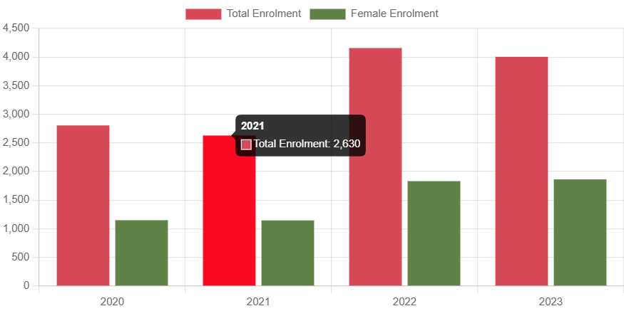

Established in 1993, Independent University, Bangladesh (IUB) is a leading private university in Bangladesh with an explicit focus on research and global partnerships. With a current enrollment of more than 10,000 at undergraduate and graduate levels, more than 234 highly qualified full-time faculty members (118 or 50.4% of whom have PhD degrees), and an alumni strength of close to 19,000, IUB strives to ensure education for all to promote the national agenda of sustainable inclusive development.
Vision & Mission
VISION:
Aspires to be a leading seat of learning and research for developing technologically competent, environmentally responsible, globally conscious future leaders with a strong liberal arts foundation.
MISSION
.Produce graduates with cutting-edge knowledge and transferable skills.
.Foster an environment to enhance research and innovation promoting sustainable development.
.Develop impactful partnerships through academia, industry and community engagement to contribute to the advancement of society.
Facts And Figures
New Female Student Enrolment:

No. of new students enrolled each year
No. of new female students enrolled each year